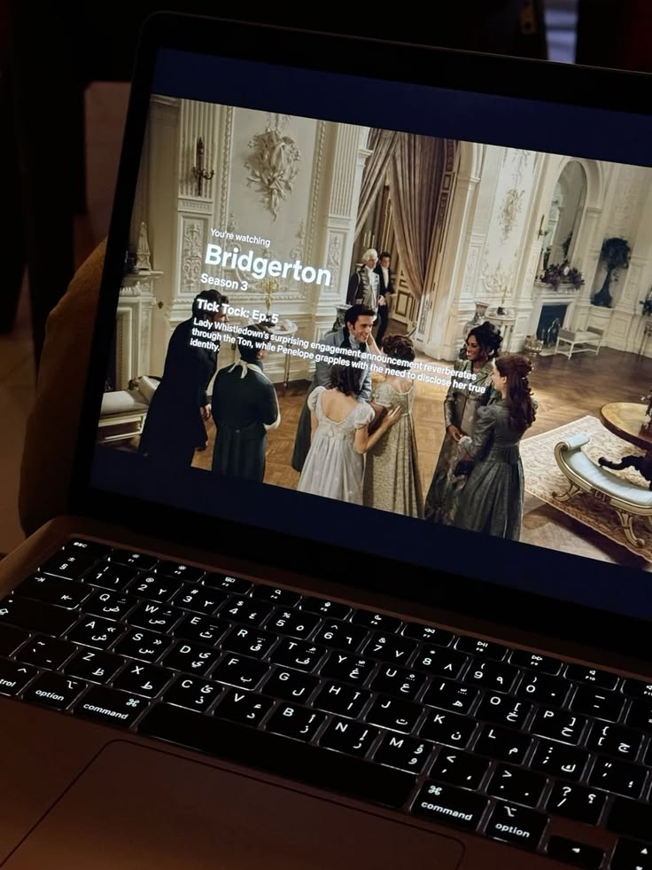
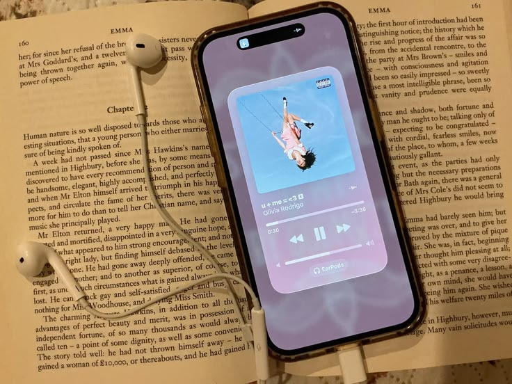
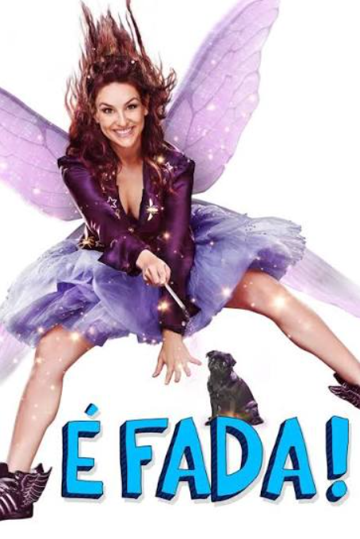
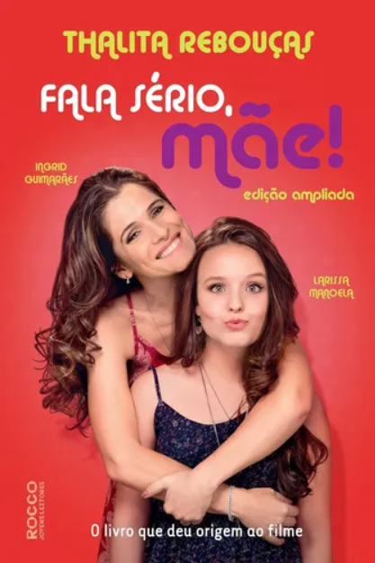
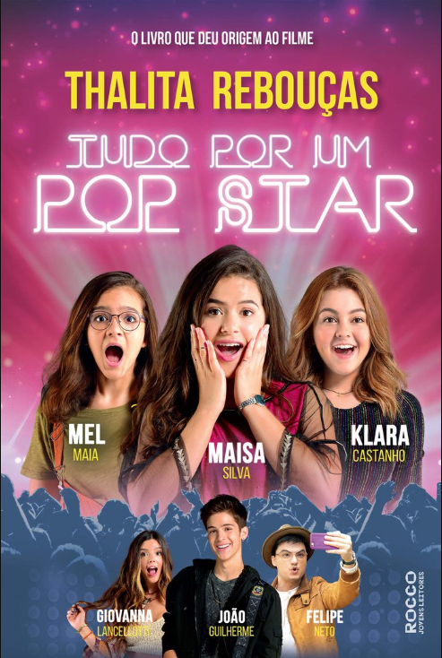
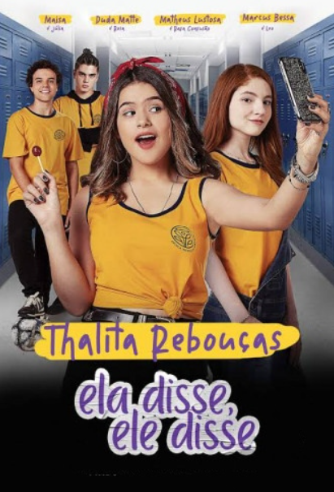
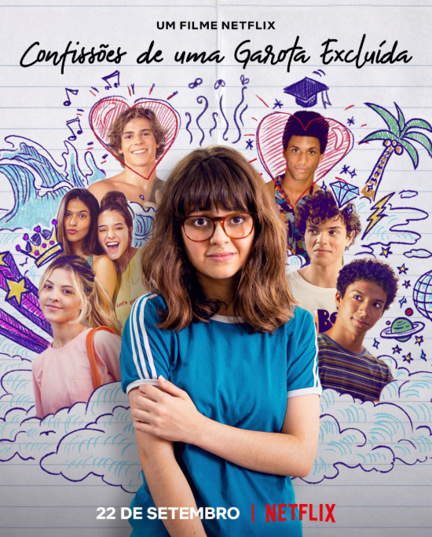
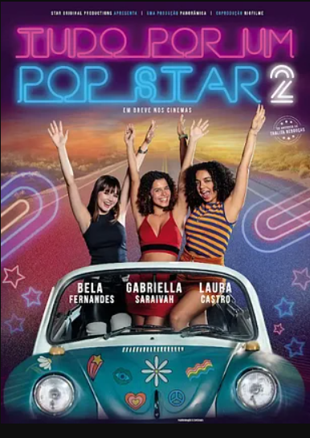

SOBRE
Tudo o que você precisa saber sobre a Thalita Rebouças
Biografia e uma seleção de curiosidades que você deveria saber sobre essa autora tão querida entre jovens.
Ler mais →Um cantinho para conversar sobre livros, filmes, séries, lugares, experiências e aquelas pequenas descobertas que deixam os dias mais interessantes.
Explorar o blog →Livros, filmes e curiosidades mais do que especiais da nossa autora homenageada.
Biografia e uma seleção de curiosidades que você deveria saber sobre essa autora tão querida entre jovens.
Ler mais →
Criações da 7ª arte e cenas que merecem um espaço especial na memória.
Ver indicações →
Como leituras simples e juvenis podem nos trazer lições difíceis e maduras.
Continuar lendo →
O Perspectiva nasceu da vontade de transformar opiniões, experiências e pequenas descobertas em conversas produtivas e amigáveis.
Aqui você encontra conteúdo feito de forma leve e pessoal: reviews, indicações, listas, experiências e ideias para conhecer e fazer algo novo.
Conheça o projeto →Uma autora que transformou histórias sobre adolescência, amizade, família e descobertas em livros que chegaram também ao cinema e ao teatro.
Thalita Rebouças nasceu no Rio de Janeiro, em 10 de novembro de 1974. Jornalista de formação, ela construiu sua trajetória principalmente como escritora, com obras voltadas especialmente para o público infantojuvenil.
Entre suas histórias mais conhecidas estão Fala Sério, Mãe!, Tudo por um Popstar, Ela Disse, Ele Disse e Confissões de uma Garota Excluída, Mal-Amada e (Um Pouco) Dramática.
Seu trabalho também ultrapassou as páginas dos livros. Algumas de suas histórias foram adaptadas para o cinema, enquanto outras chegaram aos palcos, ampliando o universo criado pela autora.
Conheça alguns dos títulos que fazem parte da trajetória literária da autora.

A relação entre Malu e sua mãe, Ângela, é apresentada através de diferentes momentos da vida da adolescente.

Manu, Gabi e Ritinha são três amigas determinadas a encontrar seus ídolos durante uma passagem da banda pelo Brasil.

Rosa e Léo começam uma nova etapa da vida escolar e enfrentam amizades, diferenças, conflitos e descobertas da adolescência.

Tetê precisa começar de novo em uma nova escola e lidar com amizades, inseguranças, bullying e a busca por pertencimento.

Uma história que mistura fantasia, humor e adolescência e que posteriormente ganhou uma versão cinematográfica.

A obra faz parte do universo de histórias que também inspirou a produção de Tudo por um Pop Star 2.
Algumas histórias de Thalita Rebouças ganharam novas versões no cinema, aproximando seus personagens de um novo público.
A atrapalhada fada Geraldine recebe a missão de ajudar Julia, uma adolescente tímida que acabou de mudar de escola, a fazer amigos e ganhar confiança.

Acompanha a relação cheia de altos e baixos, humor e afeto entre Angela Cristina e sua filha adolescente Maria de Lourdes, a Malu, ao longo das diferentes fases do crescimento.

Três amigas inseparáveis de uma cidade do interior fazem de tudo para ir ao show da maior banda pop do momento no Rio de Janeiro, vivendo uma jornada cheia de confusões e aventuras.

Rosa e Léo são dois adolescentes que chegam a uma nova escola e precisam lidar com novos amigos, a rotina escolar, as diferenças de perspectiva entre garotos e garotas e o primeiro amor.

Tetê não se sente aceita nem na escola nem em casa. Ao se mudar para o Rio de Janeiro com a família, ela ganha a chance de recomeçar do zero e descobrir a importância da amizade e da autoaceitação.

Três amigas decidem fazer uma viagem de fusca para assistir ao show de despedida de um famoso cantor pop que estudou na mesma escola que elas, enfrentando perrengues e testando a amizade pelo caminho.

“Como fazemos bobagem quando somos jovens.”
— Thalita RebouçasUma seleção de coisas que podem entrar na sua próxima lista de desejos.
Escolha uma história envolvente e reserve algumas horas só para você.
Prepare a pipoca, escolha um filme e transforme uma noite comum.
Às vezes, a melhor descoberta está a poucos quilômetros de casa.
Saia um pouco do automático e experimente algo que você nunca fez.
Tem uma indicação, sugestão ou assunto que gostaria de ver por aqui? Envie uma mensagem.
E-mail
contato@perspectiva.com
Instagram
@perspectiva.blog